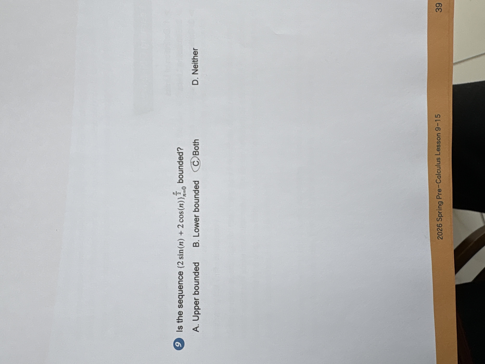

Geometry Trigonometry

Is the sequence $\{2 \sin(n) + 2 \cos(n)\}_{n=0}^{\frac{\pi}{2}}$ bounded? A. Upper bounded B. Lower bounded C. Both D. Neither
Both
Both
To determine if a sequence is bounded, we need to check if its terms always stay within a specific range of values. 1. The terms of the sequence are given by the expression $2 \sin(n) + 2 \cos(n)$. 2. Recall that the basic trigonometric functions $\sin(n)$ and $\cos(n)$ are always bounded between $-1$ and $1$. That is, $-1 \le \sin(n) \le 1$ and $-1 \le \cos(n) \le 1$ for any value of $n$. 3. Multiplying these by $2$ tells us that $-2 \le 2 \sin(n) \le 2$ and $-2 \le 2 \cos(n) \le 2$. 4. When you add two bounded functions together, the result is also bounded. Here, the sum $2 \sin(n) + 2 \cos(n)$ will never be greater than $4$ and never be less than $-4$ (actually, it stays between $-2\sqrt{2}$ and $2\sqrt{2}$). 5. Since the sequence has both a ceiling it cannot go above (upper bound) and a floor it cannot go below (lower bound), it is both upper and lower bounded.